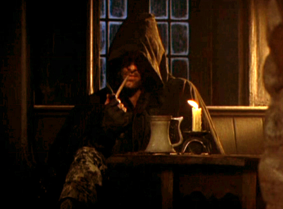

El pasado oculto de Aragorn: Los años salvajes como Trancos

En las películas de Peter Jackson conocemos a un Aragorn maduro, un misterioso montaraz que vigila a los hobbits en la taberna de El Póney Pisador en Bree. Sin embargo, para cuando Frodo y sus amigos lo conocen, Aragorn ya ha pasado casi tres décadas recorriendo la Tierra Media bajo identidades falsas, forjándose como el guerrero y líder definitivo.
La historia de sus viajes como "Trancos" (o Strider en inglés) es una de las crónicas de supervivencia, amor y deber más profundas escritas en los apéndices de J.R.R. Tolkien.
1. Thorongil: El Águila de la Estrella
Antes de establecerse firmemente en el Norte, Aragorn viajó de incógnito hacia el sur para ganar experiencia militar. Bajo el nombre falso de Thorongil, sirvió al mismísimo rey de Rohan (Thengel, padre de Théoden) y al mismísimo senescal de Gondor (Ecthelion II, padre de Denethor). Nadie sabía que ese brillante capitán extranjero era, en realidad, el legítimo heredero al trono de Isildur. Forjó victorias militares legendarias, incluyendo un ataque sorpresa en los puertos de Umbar que destruyó la flota de los Corsarios rebeldes.
2. La dura y silenciosa vida de un Dúnadan
El término "Trancos" era originalmente un apodo despectivo que los habitantes de Bree y sus alrededores daban a los misteriosos montaraces. Los hombres comunes de la zona los veían como vagabundos peligrosos e inútiles. La gran ironía de la historia de Tolkien es que, mientras la gente de Bree dormía plácidamente y despreciaba a Trancos, él y sus compañeros Montaraces del Norte pasaban noches enteras a la intemperie combatiendo en secreto a lobos, huargos y orcos salvajes que intentaban cruzar las fronteras de la Comarca.
💡 ¿Sabías que...?
El nombre falso que usó Aragorn en el sur, "Thorongil", significa "El Águila de la Estrella" en sindarin (lengua élfica). Se le llamó así porque era increíblemente rápido y certero en combate, y siempre llevaba una estrella de plata prendida en su capa de montaraz.
"No todo lo que es oro reluce, ni toda la gente errante anda perdida; a las raíces profundas no llega la escarcha, lo antiguo demente no se marchita." — El poema escrito por Bilbo Bolsón dedicado a Trancos.
3. El encuentro con Gandalf y la caza de Gollum
Fue durante estos años de montaraz cuando Aragorn entabló su profunda amistad con Gandalf el Gris. El mago, preocupado por el paradero del Anillo, le encomendó a Trancos la tarea más difícil de su vida: cazar a la criatura Gollum. Aragorn rastreó a la criatura durante años por las fronteras de Mordor y las Ciénagas de los Muertos, logrando atraparlo en un hito de rastreo militar sin precedentes, justo antes de que los agentes de Sauron lo hicieran.